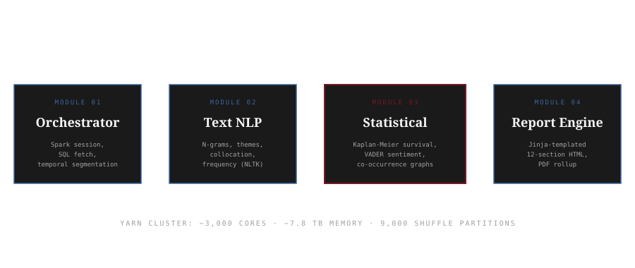
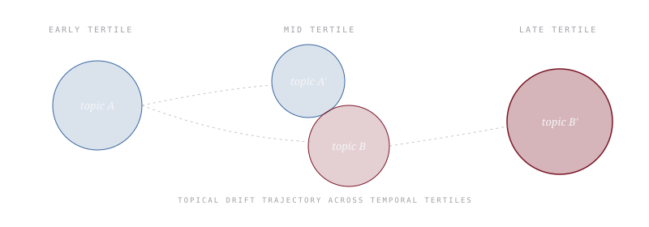

Built for a major short-form video platform's Trust & Safety team, this Spark-scale analytics engine imports time-to-eve...
Built for a major short-form video platform's Trust & Safety team, this Spark-scale analytics engine imports time-to-event analysis from biostatistics and applies it to platform integrity. The central reframe: the same Kaplan-Meier estimator that asks "what is the probability that a patient is still alive at time t after diagnosis?" can ask "what is the probability that a user session is still violation-free at time t after first content interaction?" Both questions involve right-censored observations. Both benefit from non-parametric estimation. The toolkit transfers cleanly. Layered with LDA topic modeling, VADER sentiment, and NetworkX co-occurrence, the engine produces a 12-section auto-generated investigation report that is reproducible across cases and comparable across users.
In medical research, the Kaplan-Meier estimator answers a specific question: given a cohort of patients diagnosed at time zero, what is the probability that any given patient is still alive at time t? The estimator handles the inconvenient fact that not every patient's outcome is observed. Some are still alive when the study ends; some leave the study; some die from causes unrelated to the disease. These are right-censored observations, and KM is the non-parametric tool designed to use them honestly rather than throw them out.
Trust & Safety analytics has a structurally identical problem. Given a user's session beginning at time zero, what is the probability that the session has remained free of policy-violative content at time t? The events of interest (encountering content flagged by a moderation system) occur on the same kind of irregular timeline as patient deaths. The censoring is the same: many sessions end without any violation event, which is not the same as those sessions being violation-free forever. The data structure is the same. The estimator transfers without modification.
The intellectual move that anchors this engine is recognizing that platform integrity decay is well-modeled as a survival problem. Once you accept the reframe, an entire toolkit comes with it: median time to violation as a population-level health metric, comparative survival functions across user segments, hazard rate analysis for identifying high-risk windows. The biostatistics literature has been refining these tools since 1958. T&S analytics had been reinventing weaker versions in isolation.
The engine runs on a YARN-managed Spark cluster sized for petabyte-scale moderation telemetry: roughly 3,000 CPU cores allocated at 2 GB per core for 7.8 TB aggregate execution memory, with shuffle partitions clamped against the cluster's physical limits to stop data skew when complex cross-metric aggregations hit the executors. The Spark layer exists to make the analytical layer tractable, not to be the contribution.
The contribution is the decomposition. The pipeline splits cleanly into four modules, each with a single responsibility, and the modules communicate through standardized intermediate CSV artifacts rather than in-memory state. Any module can be re-run in isolation when a methodology question demands it.

FIG. 01 The four-module decomposition. Modules communicate through standardized CSV intermediates rather than in-memory state, so any analytical module can be re-run in isolation without re-running the Spark fetch.
The core analytical move is small in code and large in consequence. For each user-segment, the engine computes the temporal difference between consecutive content events as duration in seconds. The event indicator is one if the content interaction was associated with a flagged policy violation and zero otherwise. The pair (duration, event_observed) is what lifelines.KaplanMeierFitter wants. Fit the estimator on the segment's data, plot the survival function, read off the median time to violation. The function is two dozen lines of Python; the reframing is the work.
# Per-user-segment survival fit
df[time_column] = pd.to_datetime(df[time_column])
df.sort_values(by=time_column, inplace=True)
df['duration'] = df[time_column].diff().dt.total_seconds()
df = df.dropna(subset=['duration'])
df['event_observed'] = df[event_column].apply(
lambda x: 1 if not pd.isna(x) and x.strip() != '' else 0
)
kmf = KaplanMeierFitter()
kmf.fit(df['duration'], event_observed=df['event_observed'], label=segment)
kmf.plot_survival_function()
median_survival = kmf.median_survival_time_ # seconds to first violation
FIG. 02 The survival fit. Duration is the inter-event spacing in seconds; event_observed is one when a policy was triggered. The median survival time is the population-level health metric.
The comparative survival mode is what makes the engine useful for forensic per-user investigation. By segmenting one user's data into temporal tertiles (early, mid, late), then fitting separate Kaplan-Meier curves on each, the engine reveals whether that user's median time-to-violation is shrinking, stable, or growing across the observation window. A shrinking median is a measurable signal of acceleration. The same comparison across user cohorts surfaces population-level shifts in platform health.
The interpretive note that matters: a survival time below 3,600 seconds (one hour) means a user encountered violative content within the first hour of platform engagement in that segment. The engine surfaces that threshold automatically in its narrative output, because that interval is where moderation feedback loops are most likely to compound.
Survival analysis answers when violations happen. It does not answer what topical neighborhood the user was in when the violation occurred, or how that neighborhood evolved. The engine's text NLP module fills that gap with three layered passes: latent Dirichlet allocation for topic clusters, VADER and TextBlob for sentiment polarity over time, and NetworkX-backed co-occurrence graphs for word-pair structure inside a five-token window.
The triangulation matters because each signal is interpretable on its own and dramatically more useful when read against the others. A drop in the survival curve that coincides with a sentiment polarity shift and a topic-cluster turnover is a different finding than a survival drop while the topical landscape is stable. The first pattern suggests the user moved into new content territory; the second suggests the existing territory became more violative. Different remediations follow.
Co-occurrence analysis is the layer that catches what topic modeling smooths over. LDA gives you topic distributions; the co-occurrence graph gives you the word-pairs that shape the texture inside those topics. When two words that did not previously co-occur start appearing together at high frequency in a user's consumption window, the engine flags the pair regardless of whether either word is independently policy-relevant. New language patterns precede new behavior.

FIG. 03 Topic drift across time slices. LDA topic clusters are tracked from early to late tertile; emergent clusters in red signal new topical territory. Read alongside the survival curve, drift in the topical neighborhood gives the analyst a why to attach to the when.
The fourth module is a Jinja-templated HTML generator that takes the analytical outputs of the prior three and produces a 12-section report with a fixed structure. The structure is the contribution. When every investigation produces the same sections in the same order with the same statistical choices behind each section, two investigations of two different cases become directly comparable in a way that ad-hoc analysis never permits. Reviewers can read the seventh section of any report with a known set of expectations.
| SECTION | CONTENT |
|---|---|
| 01 | Executive summary |
| 02 | Methodology |
| 03 | N-grams and co-occurrence analysis |
| 04 | Themes and clusters (LDA topic modeling) |
| 05 | Caption and hashtag analysis |
| 06 | Visibility and engagement metrics |
| 07 | Sentiment analysis (VADER) |
| 08 | Search term effectiveness |
| 09 | Cross-metric correlation analysis |
| 10 | Search term to policy violation mapping |
| 11 | User engagement analysis |
| 12 | Conclusion and recommendations |
FIG. 04 The fixed 12-section investigation report. Every analysis emits the same structure; every reviewer reads with the same expectations.
The engine generates the survival functions, heatmaps, and topic clusters as image artifacts written to a per-investigation directory. The Jinja template assembles them into the final HTML. A separate FPDF rollup converts the HTML to a print-ready PDF. The whole sequence runs unattended after the analyst points the orchestrator at a new dataset and confirms the column mappings.
Survival analysis assumes independence between consecutive events. That assumption is debatable in any system where the recommendation engine shapes the next interaction. The Kaplan-Meier estimator is robust to this in practice, but the median survival time should be read as a population-level summary, not a per-session prediction. Right-censoring assumptions matter equally: a session that ends without a violation is censored, not violation-free in perpetuity.
Topic modeling produces interpretable clusters at the cost of run-to-run reproducibility. LDA's stochastic initialization means the same data can produce different topic numberings on different runs; the topical drift inference is robust to renumbering, but downstream automation that hard-codes topic IDs is not. The engine sidesteps this by labeling topics by their top-five terms rather than by index.
The engine was built for a major short-form video platform's Trust & Safety analytics team and is the upstream tool driving the per-user investigation methodology described separately. The contribution is the cross-domain reframe and the reproducibility scaffold; the analytical primitives are standard.